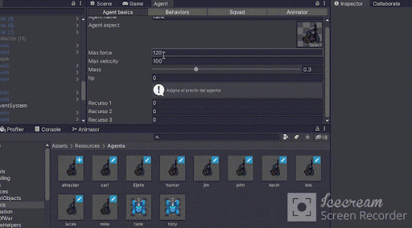

RTS Agent Generator
🧾 Description
RTS Agent Generator is a Unity-based tool developed as part of my thesis, aimed at designing agents for Real-Time Strategy (RTS) games. It focuses on Steering Behaviors and includes both a custom editor and in-engine editor. It supports agent types such as gatherers, seekers, leaders ("Follow the Leader"), and followers. It also features a level creation and saving system for building custom RTS scenarios.
🖼️ Media
External Editor
In-Engine Editor

Collectors

Pathfinding (A*)

Combat (Seek and Flee)

💻 Sample Code
SB Follow the Leader
public void LeaderFollow(GameObject leader)
{
Vector2 tv = leader.GetComponent<AgentManager>().vel;
Vector2 clone = tv;
clone = clone.normalized * leaderBD;
Vector2 ahead = (Vector2)leader.transform.position + clone;
Vector2 behind = (Vector2)leader.transform.position + clone * -1;
if (IsOnLeaderSight(leader, ahead))
{
Evade(leader.transform);
}
Arrive(behind);
vel += Separate();
}
Seek Behavior
public Vector2 Seek(Vector2 target)
{
if (target != null)
{
Vector2 desired = target - (Vector2)transform.position;
float d = desired.magnitude;
desired = desired.normalized * maxVel;
steering = desired - vel;
steering = Vector2.ClampMagnitude(steering, maxForce);
steering /= mass;
vel = Vector2.ClampMagnitude(vel + steering * Time.deltaTime, maxVel);
transform.position += (Vector3)vel * Time.deltaTime;
if (vel.magnitude == 0)
{
return steering;
}
LookDirection();
//SteerVisual(desired);
return steering;
}
return Wander();
}
Pathfinding
public List<Node> AStar(int startX, int startY, int endX, int endY) {
Stopwatch sw = new Stopwatch();
sw.Start();
Node begin = map.GetMapNode(startX, startY);
Node goal = map.GetMapNode(endX, endY);
if (begin == null || goal == null) {
return null;
}
openList = new BinaryTree<Node>(map.MaxSize);
closedList = new HashSet<Node>();
openList.Add(begin);
for (int x = 0; x < map.GetWidth(); x++) {
for (int y = 0; y < map.GetHeight(); y++) {
Node pathNode = map.GetMapNode(x, y);
pathNode.gCost = infinity;
pathNode.CalculateF();
pathNode.parent = null;
}
}
begin.gCost = 0;
begin.hCost = HeuristicM(begin, goal);
begin.CalculateF();
while (openList.Count > 0) {
Node current = openList.RemoveFirst();
closedList.Add(current);
if (current == goal) {
sw.Stop();
UnityEngine.Debug.Log("Camino encontrado en " + sw.ElapsedMilliseconds + " ms");
return BackTrack(goal);
}
foreach (Node neighbourNode in GetNeighbourList(current)) {
if (closedList.Contains(neighbourNode)) continue;
if (!neighbourNode.notWall) {
closedList.Add(neighbourNode);
continue;
}
int tentativeGCost = current.gCost + HeuristicM(current, neighbourNode);
if (tentativeGCost < neighbourNode.gCost) {
neighbourNode.parent = current;
neighbourNode.gCost = tentativeGCost;
neighbourNode.hCost = HeuristicM(neighbourNode, goal);
neighbourNode.CalculateF();
if (!openList.Contains(neighbourNode)) {
openList.Add(neighbourNode);
}
else
{
openList.UpdeateLeaf(neighbourNode);
}
}
}
}
return null;
}